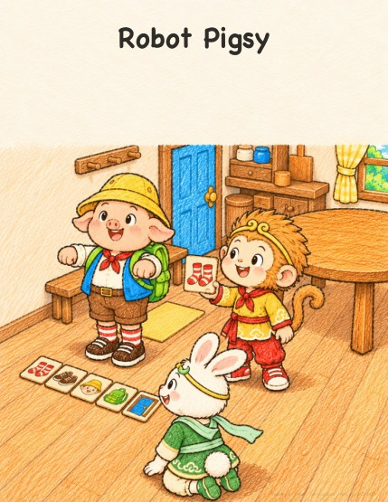

Wukong
Wukong 
Robot Pigsy
Pigsy plays robot and does what Wukong says, in exactly that order: shoes before socks, and the hat on his foot! Wukong and Jade Rabbit draw one step on each card and check the order. Now Pigsy gets every step right, and Wukong takes a turn as the robot.
English bedtime picture book · About age 5.5 · Free to read and print
Read a little adventure.
Turn the page with the buttons, arrow keys, or a swipe.

This page could not load. Please try again, or download the PDF.
Download PDFRobot Pigsy
© 2026 Peihong GuoLicensed under CC BY-NC-ND 4.0
Page 1 of 18
Keep a copy for later: Download PDF
How do I print a little book?
Download the booklet edition. Print on US Letter, landscape, double-sided with short-edge flipping, at actual size / 100%, one PDF page per sheet, in normal page order. Each PDF page already contains two book pages.
The print booklet has 20 pages, including covers and an author page. The inside back cover is intentionally left quiet.
This book uses 5 sheets, with 0 blank book pages added at the end. Nest the sheets, fold through the center and staple along the fold.
Current reading and print files
The current English and Chinese editions are available below. Reading and booklet PDFs carry a subtle attribution watermark.
- v2 — Reading PDF · Booklet PDF
Edition history
- v2 · — Paper colour unified with the rest of the series; text and pictures unchanged.
- v1 · — First edition.
Help the next story grow.
Stories are free to read and print. If you and your child enjoy them, you are welcome to support more stories.